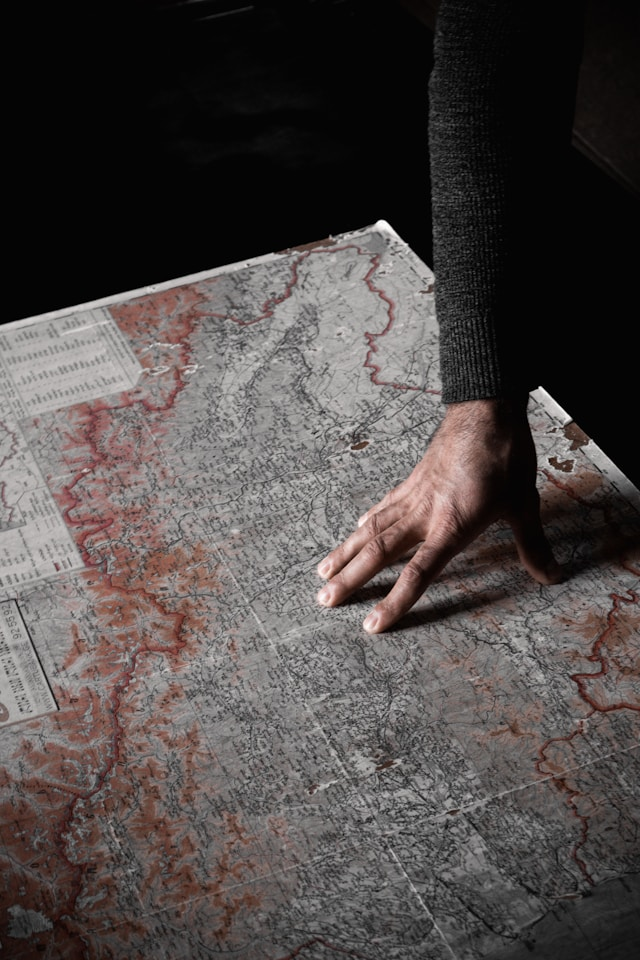

Фритрек и нулевой спринт: Подготовка к работе
first step

Это было самое начало пути. На этом этапе важно было проникнуться основами и настроиться на учёбу. И, возможно, подумать, как новые знания могут повлиять на ваше будущее.
Помню, как открыл первый урок с ощущением, будто стою на краю огромного океана. Этот курс – как карта сокровищ. А что, если эти знания изменят всё?